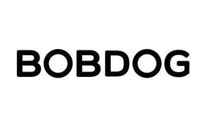

Trade Mark Journal No.2025/010 7 March 2025
UK00004136837 13 December 2024 (3,5,10,12,16,18,20,22,24,25,28)

- Class 3
- Hair conditioners; Hand washes; Powder laundry detergents; Cleaning preparations; Cotton sticks for cosmetic purposes; Beauty masks; Make-up removing preparations; Toilet water; Perfumes; Non-medicated skin lotions; Hand creams; Lipsticks; Cakes of toilet soap; Cleansing milk for toilet purposes; Shampoos; Shower gels; Baby bubble bath; Baby shampoo; Fabric softeners for laundry use; Laundry detergents; Cosmetics; Cotton wool for cosmetic purposes; Talcum powders; Moisturizing lotions; Sunscreen lotions; Toners for cosmetic purposes; Baby oils; Mouthwashes, not for medical purposes; Toothpaste; Air fragrancing preparations; Non-medicated diaper rash cream.
- Class 5
- Sanitary napkins; Disinfectant wipes; Tissues impregnated with pharmaceutical lotions; Babies' nappies; Babies' diaper-pants; swim diapers, disposable, for babies; diaper changing mats, disposable, for babies; Pants, absorbent, for incontinence; Breast-nursing pads; Sanitising wipes.
- Class 10
- Teething rings; Breast pumps; dummies for babies; Feeding bottle valves; Feeding bottle teats; baby feeding dummies; Teats for use with babies' feeding bottles; clips for dummies; Childbirth mattresses; Sanitary masks; Orthopaedic articles; Maternity belts; Babies' bottles; gum massagers for babies.
- Class 12
- Fitted pushchair mosquito nets; Stroller hoods; fitted footmuffs for pushchairs; bags adapted for pushchairs; Pushchair covers; Pushchairs; Safety seats for children, for vehicles; Child carrying trailers; Vehicle safety harness for safety seats for children; Safety seats for infants and children for vehicles; Bicycles; Push scooters [vehicles]; self-balancing boards; Self balancing electric scooters; self-balancing scooters; electric bicycles; Tricycles; Pumps for bicycle tyres; Non-motorized, collapsible luggage carts; Trolleys.
- Class 16
- Pens [office requisites]; Paper cutting crafts; Comic books; Magazines [periodicals]; Table napkins of paper; School supplies [stationery]; Boxes for pens; Terrestrial globes; Ink; Stationery; Small blackboards; Writing chalk; Correcting fluids [office requisites]; Children's books incorporating an audio component; Paintbrushes; Paper bags; Place mats of paper; Stapling presses [office requisites]; Propelling pencils; Paintings; Albums; Gift-wrapping paper; Double-sided adhesive tapes for household use; Pencils; Document files [stationery]; Garbage bags of plastic; Pencil sharpening machines, electric or non-electric; Handkerchiefs of paper; Books in the fields of games and gaming; Waxed paper; Stickers [stationery]; Adhesives [glues] for stationery or household purposes; Oil pastels; Bookends; Starch paste [adhesive] for stationery or household purposes; Marking pens (stationery); Writing cases [sets]; Note books; Story books; Marker pens; Writing instruments; Staple removers [office requisites]; Ballpoint pens; Staples for offices; Crayons; Blackboard erasers [chalk erasers]; Highlighter pens; Removable self-stick notes; Steel pens; Clips for offices; Pen calligraphy copybooks; Seals [stationery]; Greeting cards; Magnetic boards being office requisites; Erasers; Writing or drawing books.
- Class 18
- School satchels; Travelling cases; Bags for sports; Slings for carrying infants; Key cases; Haversacks; Travelling bags; Pocket wallets; Umbrella covers; Umbrellas; Umbrellas for children; Reins for guiding children; Pouch baby carriers; Sling bags for carrying infants; Baby carriers worn on the body; Wheeled shopping bags; Suitcases; Reusable shopping bags; Backpacks.
- Class 20
- Anti-roll cushions for babies; camping mattresses; Beds; head support cushions for babies; Stools; Mirrors [looking glasses]; Wall-mounted baby changing platforms; Chairs [seats]; Bed rails; Tables; Furniture; Trolleys [furniture]; Infant walkers; Tea tables; Reusable baby changing mats; U-shaped pillows; Throw pillows; Wardrobes; Mats for infant playpens; Coatstands; Pillows; Mattresses; Playpens for babies; cots for babies; head positioning pillows for babies; moses baskets; High chairs for babies; Cradles; Sofas.
- Class 22
- Tents for mountaineering or camping; Hammocks; Wrapping or binding bands, not of metal; Ropes; Flexible intermediate bulk containers [sacks] for transporting materials; Sacks; Bags [envelopes, pouches] of textile, for packaging; Awnings of textile; Awnings of synthetic materials; Tents.
- Class 24
- Textile material; Knitted fabric; Upholstery fabrics; Towels of textile; Handkerchiefs of textile; Quilts of towel; Bath towels; Covers for pillows; Bed covers; Quilts; Bed linen; Mosquito nets; Bed blankets; Quilt covers; Diaper changing cloths for babies; sleeping bags for babies; baby buntings; Sleeping bags; cot bumpers [bed linen]; Textile goods for use as bedding; Bed valances; Down quilts; Crib sheets; Tablecloths, not of paper; Furniture coverings of textile; Door curtains; Shower curtains; Curtains; Shower curtains of textile or plastic; Pillowcases; Children's blankets; Cloth; Wall hangings of silk; Non-woven textile fabrics; Household linen; picnic blankets; Bedsheets of leather.
- Class 25
- Clothing; Trousers; Coats; Skirts; Underwear; Underpants; Children's clothing; Ready-made clothing; Layettes [clothing]; Bathing suits; Raincoats; Shoes; Hats; Hosiery; Gloves [clothing]; Scarfs; Belts [clothing]; Sleep masks; Pullovers; Knitwear [clothing].
- Class 28
- Toys; Playing cards; Dolls; Kites; Building blocks [toys]; baby gyms; Smart toys; Balls for sports; Toy vehicles; Dice; Toy pistols; In-line roller skates; Ornaments for Christmas trees, except lights, candles and confectionery; Board games; Inflatable toys; Children's toy bicycles other than for transport; Jigsaw puzzles; Baby rattles; swimming pool air floats; Scooters [toys].
BOBDOG HOLDING COMPANY
Representative: HGF Limited